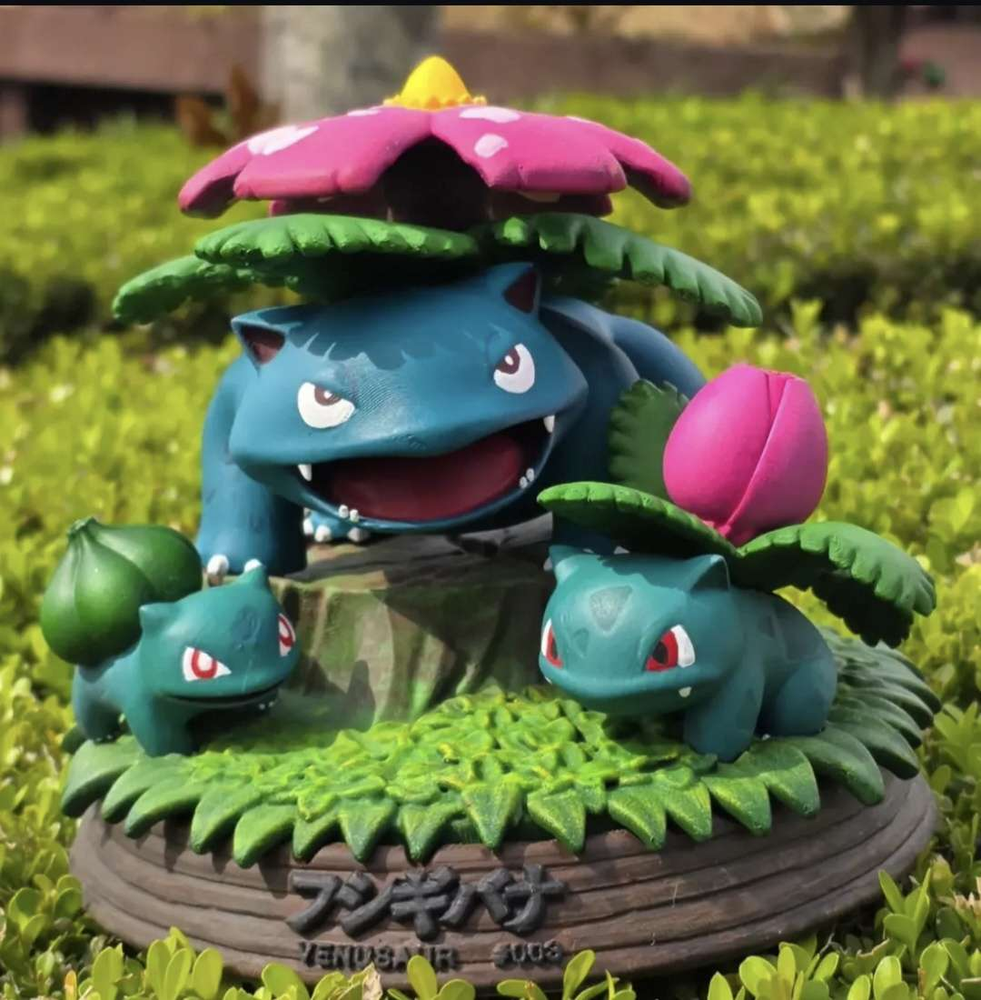
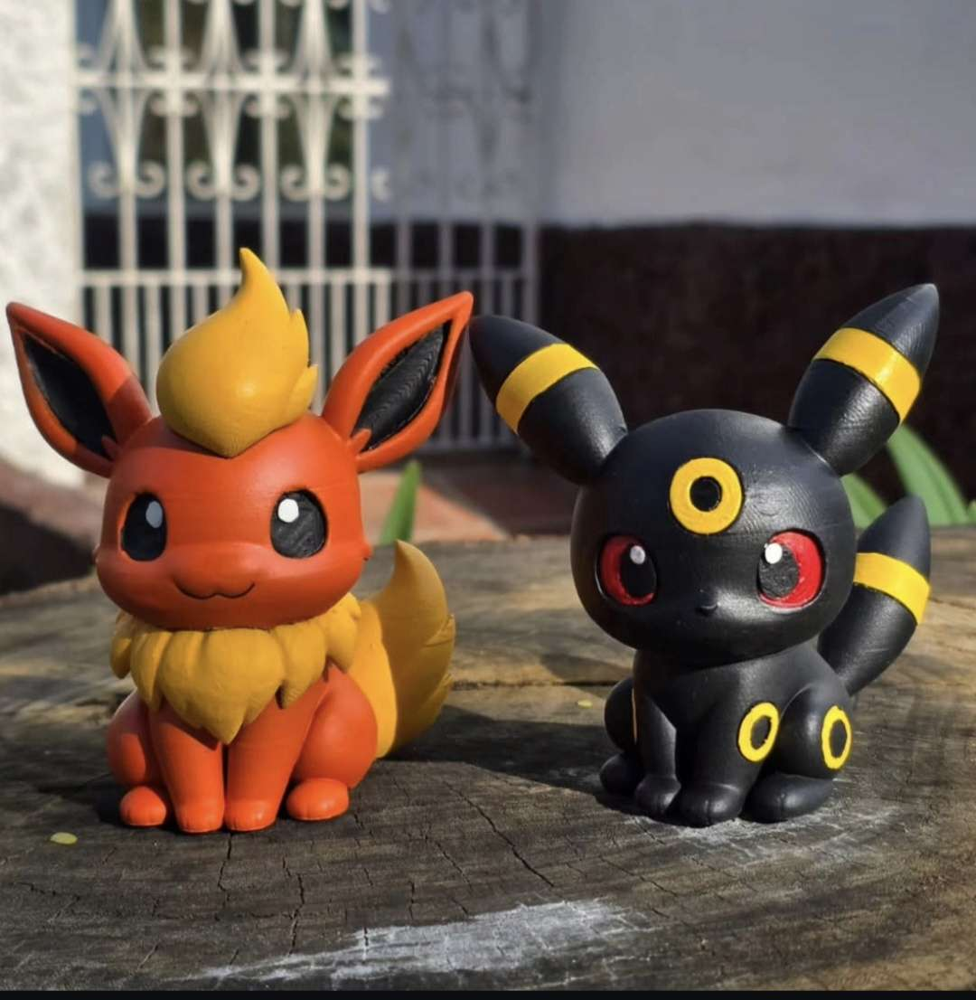
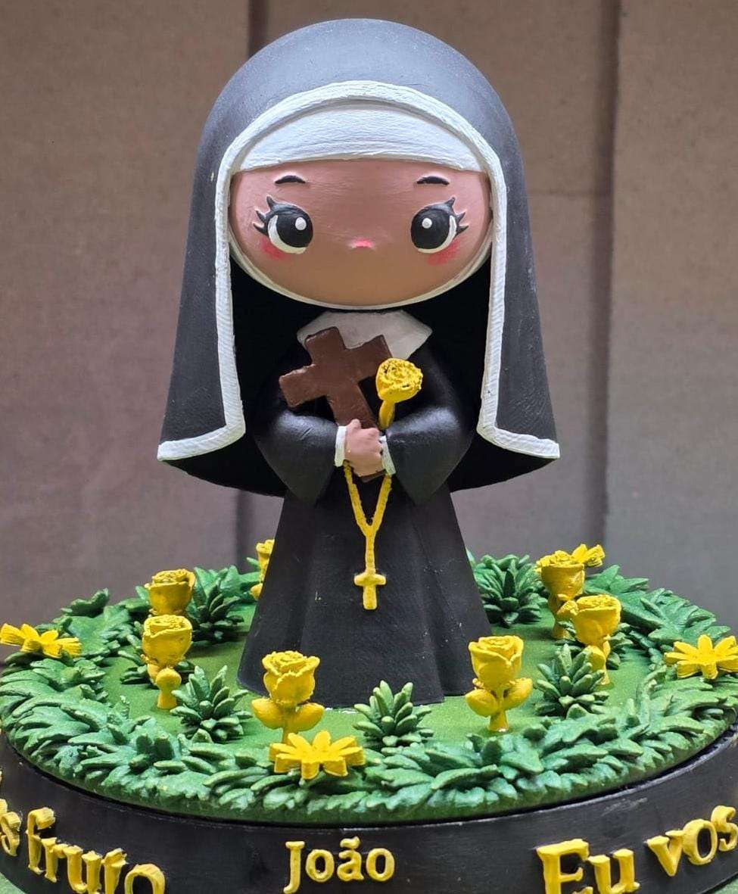
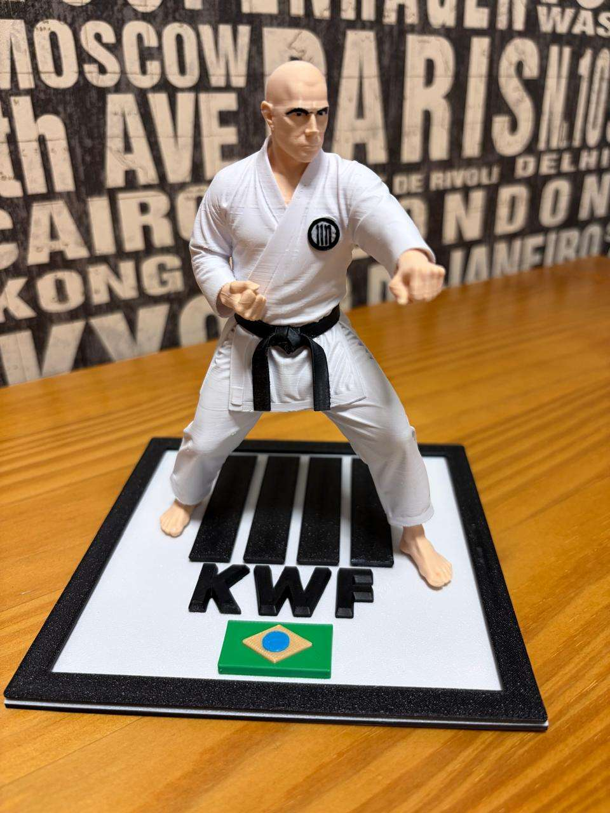
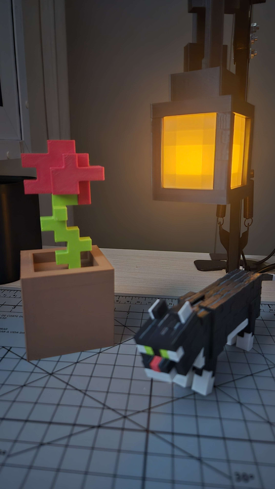
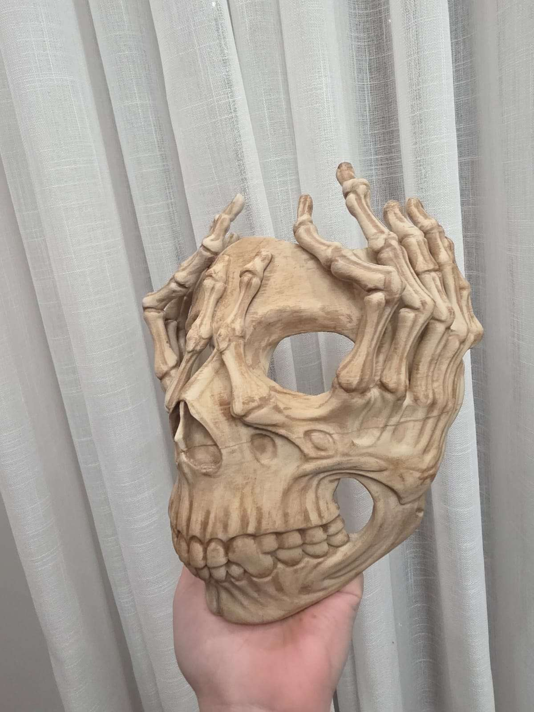
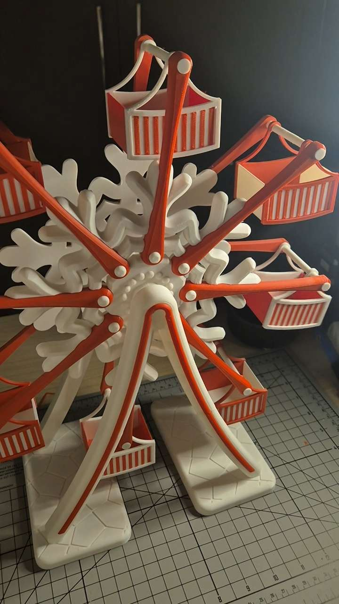
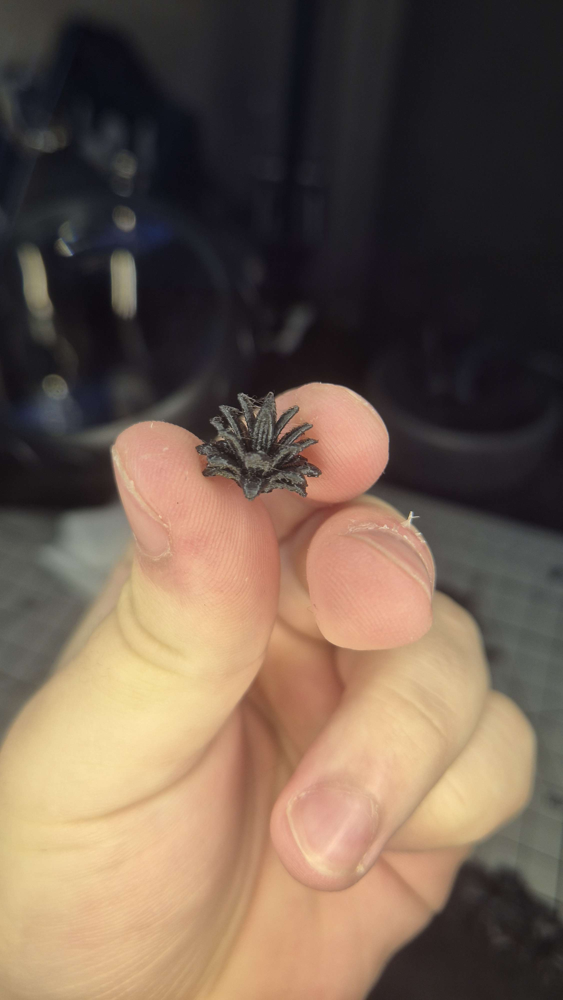
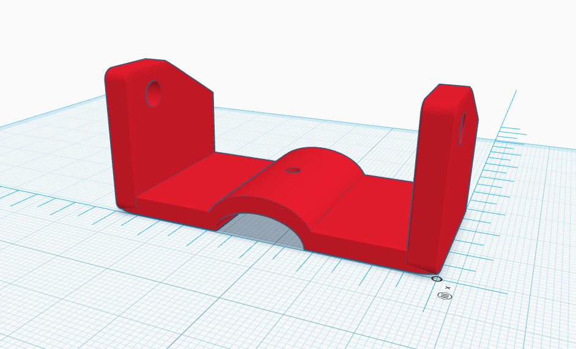
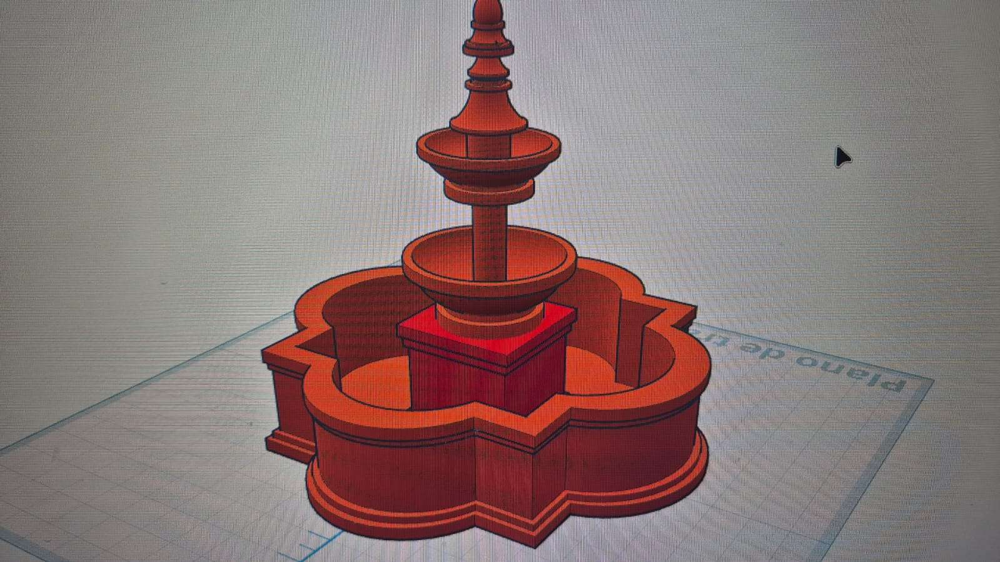

Decoração
Diorama Bulbassauro
Modelo em escala 1:10 de um diorama do Pokémon Bulbassauro. Impresso em PLA, finalizado após um processo de lixamento e pintura com tinta acrílica.
Projetos desenvolvidos e produzidos por impressão 3D. Uma coleção de peças, experimentos e criações que partiram desde a modelagem para o produto final.

Modelo em escala 1:10 de um diorama do Pokémon Bulbassauro. Impresso em PLA, finalizado após um processo de lixamento e pintura com tinta acrílica.

Modelos impressos em PLA, com duas diferentes evoluções do Pokémon Eevee em estilo chibi. Finalizadas com o trabalho de lixamento e pintura com tinta acrílica.

Produto feito sob encomenda, miniatura (sem escala) da Santa Teresinha de Liseux. Modelado 100% do zero à mão no blender e impresso em PLA, finalizado após um processo de lixamento e pintura com tinta acrílica.

Produto feito sob encomenda, miniatura (sem escala) do próprio cliente. Impresso em PLA, na modalidade multicolorida utilizando filamento "caucasiano", branco e preto (3Dprocer)

Pacote de cenário do jogo minecraft produzido sobre encomenda, impresso em PLA multipartes, Marrom claro e Verde claro (Masterprint), branco, vermelho e preto (Ender PLA).

Máscara de caveira feita sob encomenda com as medidas do rosto do cliente, impressa em PLA e finalizada com lixamento e pintura.

Roda gigante funcional testando os limites da área de impressão. Peças ornamentais impressas em PLA utilizando o multicolor. Peças estruturais (Rolamentos e polias) em PETG

Planta de teste impressa para testar a calibração da precisão da impressora 3D em uma peça de 16mm. Testado temperatura, velocidade e pressão do extrusor.

Suporte de celular para carro, desenvolvido nas medidas do painel do cliente, impresso em ABS para resistência térmica.

Fonte 100% funcional com design moderno, feita nas medidas do cliente, impressa em PETG, de forma com que o número de paredes isole corretamente a água sem vazamentos. Protegido com verniz acrílico.
Profissional com experiência prática em impressão 3D FDM, modelagem tridimensional e desenvolvimento de peças personalizadas. Conhecimento em operação, calibração e manutenção de impressoras 3D, configuração de fatiadores e resolução de problemas técnicos. Perfil detalhista e proativo, com foco em qualidade, estudo técnico e inovação.
Já participei ativamente como fundador e coordenador de duas lojas de impressão 3D. A primeira era focada na venda de serviços personalizados com diferentes materiais, incluindo materiais técnicos como PETG, ABS e ASA.
A segunda era focada em impressão em PLA e pós-processamento do material para a confecção de figures e bonecos personalizados. Em ambas as empresas, trabalhei com modelagem, operação das máquinas e pós-processamento.